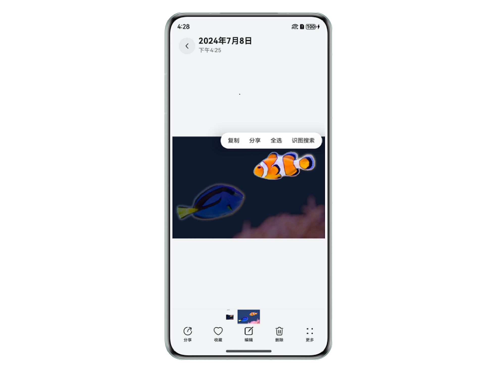

1 AI识图：开启智能图像处理新纪元
1.1 AI识图技术概览
随着人工智能技术的飞速发展，AI识图已成为智能设备感知物理世界的核心能力之一。本节将从AI识图场景落地和技术实现两个维度，解析HarmonyOS如何通过AI识图技术重构图像处理的范式，为开发者与用户提供更高效、精准、自然的交互体验。
1.1.1 场景介绍：HarmonyOS如何赋能AI识图
HarmonyOS作为新一代智能操作系统的代表，凭借其强大的生态系统和前沿的AI能力，正在重新定义智能图像处理的边界。AI识图功能作为HarmonyOS的核心亮点之一，集成了OCR（光学字符识别）、主体分割、实体识别、多目标识别等多项尖端技术，为用户和开发者提供了前所未有的智能化体验。
智能化交互，颠覆传统体验
AI识图功能能够轻松处理静态图片、视频暂停帧以及自定义渲染场景下的图像，为用户提供无缝的智能交互体验。无论是从图片中提取文字，还是识别图像中的主体并进行分割，AI识图都能以相当高的准确率和速度完成任务，彻底改变了传统图像处理的方式。
多场景覆盖，满足多样化需求
文字识别：用户只需长按图片中的文字，即可快速提取并复制文本内容，甚至触发电话号码、邮箱、网址等实体的快捷操作（如直接拨打电话或发送邮件）。
主体分割：用户长按图片中的主体，即可实现精准分割，轻松完成复制、分享或搜索操作。
识图搜索：通过抠图功能，用户可以基于图像中的主体进行搜索，快速获取相关信息。例如，识别植物、动物、建筑物等目标，并以直观的ICON标识呈现搜索结果。
开发者友好，快速集成与创新
对于开发者而言，HarmonyOS的AI识图功能提供了简单易用的API和控件（如VisionImageAnalyzer），支持快速集成到各类应用中。无论是智能相册、安防监控，还是零售管理，开发者都能通过AI识图功能为用户提供更智能的服务，显著提升应用竞争力。

1.1.2 技术核心：AI识图如何重塑图像处理
AI识图工作原理主要依赖于深度学习模型和服务端的强大计算能力。当应用调用此能力时，会触发一系列预训练的算法对输入图片进行分析，这些功能背后是一套复杂的神经网络架构，它们经过大量数据训练后能够准确地理解和解释视觉内容。为了保证性能与准确性之间的平衡，部分任务可能在设备本地完成，而另一些则会在云端服务器上处理（如识图搜索等）。
多功能集成，全面提升效率
AI识图功能不仅支持文字识别、主体分割等基础操作，还提供多目标识别，以及集成了AIButton等智能交互特性。具体如下：
- 多目标识别
多目标识别可同时检测出给定图片中的各种物体，包括风景、动物、植物、建筑、树、人脸、表格、文本等位置，并框选出物体。
- AIButton
AIButton集成了多种智能识别和操作功能的用户界面组件，根据图片内容动态显示（图片中存在文本且文本区域大于图片区域的5%时AIButton才会显示），主要用于提升用户在处理图片内容时的效率和体验，主要功能包括：
能力
触发条件
说明
实体识别与快捷操作
电话号码、邮箱、网址、地址、时间等实体的显性下划线标识
当图片中包含这些类型的文本信息时，AIButton 会以显性的下划线形式标记出来。点击这些标记后，会弹出相应的快捷操作菜单（如拨打电话、发送邮件、打开网址等）。
原图翻译
系统设置语种与图片上文本语种不一致时进行翻译
如果系统的当前语言设置与图片中的文本语言不同，AIButton 可以将图片中的文本翻译为当前系统的语言。
表格提取
图片中存在表格时出现
当图片中包含表格时，AIButton 会提供提取表格数据的功能，方便用户快速获取表格内容。
图1-2 AIButton示意图
- 高精度识别：基于深度学习的算法模型，能够精准识别图像中的复杂内容，甚至支持多语言文字识别和翻译。
- 低功耗设计：优化后的算法和硬件协同设计，确保AI识图功能在移动设备上也能高效运行，延长设备续航时间。
开发者创新，打造智能化应用生态
- 提升用户体验：通过智能化的图像处理能力，用户能够更快速、更便捷地获取所需信息，显著提升使用效率。
- 赋能开发者创新：提供丰富的API和控件，帮助开发者快速集成AI识图功能，打造更具竞争力的智能应用。
1.2 AI识图技术的使用与实践
1.2.1 快速上手：如何使用AI识图技术
AI识图功能的主开关入口位于基础控件API列表中，开发者仅需使用基础控件提供的使能接口即可开启功能。目前支持的基础控件包括Image、Video、XComponent，分别用于实现静态图片、视频暂停帧以及自定义渲染场景下的识图功能。
此外，HarmonyOS还提供了VisionImageAnalyzer（AI识图控件），开发者可以将其与Image、Video、XComponent控件配合使用，轻松实现多样化的识图功能：
- Image控件：支持静态图片上的文字识别、主体分割等功能。
- Video控件：支持视频播放暂停帧的识图分析。
- XComponent控件：支持自定义渲染场景下的图像处理。
为了帮助开发者更好地掌握AI识图及文字识别能力，HarmonyOS官方推出了丰富的学习资源：
|
资源形式 |
资源名称 |
说明 |
|---|---|---|
|
视频课程 |
通过实例讲解，引导开发者快速上手文本识别功能 |
|
|
深入讲解具体场景下的视觉类AI能力，助力开发者实现场景化视觉服务 |
||
|
Codelabs课程 |
涵盖文字识别、主体分割等基础能力 |
|
|
聚焦场景化应用，提供从理论到实践的全面指导 |
所有课程均附带完整源码及源码地址，开发者可随时下载学习、运行并查看实际效果。源码的开放不仅降低了学习门槛，还为开发者打造智能化、高效化的应用程序奠定了坚实基础。
1.2.2 优化技巧：如何最大化AI识图的价值
为更好利用识图功能，我们提出以下建议：
- AI识图功能可帮助用户从图片上获取更多的信息（长按抠图，长按选取文本，长按实体识别等）。建议在大图预览场景下打开此功能，大图预览场景下用户对图片中的内容会更感兴趣，此时适时的提供识图服务契合用户体验场景，同时为用户提供最佳的识图交互体验。
- AI识图功能的AIButton的显示与图片中是否存在文本相关联，能够显性地提醒用户进行操作。开启AIButton会触发图片的预分析，导致一定的功耗开销，因此，建议开发者充分理解自身业务场景，预估目标用户图片内容分布，在兼顾用户图片浏览体验和提供更高阶AI识图功能体验的情况下按需提供AIButton。例如，业务本身是辅助用户高效提取图片中的文本内容，开启AIButton将会提升用户文本提取的体验。业务本身更偏向于图片编辑，也可隐藏AIButton。
1.3 场景案例
1.3.1 案例1：开发者世界中的AI抠图应用
HOMS客户端（开发者世界APP）中的AI抠图功能，通过Image控件实现了在静态图片上的精准识图与抠图。用户只需在开发者世界APP的体验页面，点击AI抠图大卡片进入详情页面，即可通过长按图片中的实体进行识别并抠图。识别后的实体不仅可轻松复制，还能便捷分享。此外，开发者世界APP还贴心提供了源代码预览功能，让开发者能够直接复制使用，极大地提升了开发效率。
开发关键点
- （可选）首先，将待分析的图像资源文件转换为PixelMap对象。通常通过PixelMap加载资源文件更高效更灵活；
- 在Image组件中，将enableAnalyzer属性设置为true，以启用AI分析功能。
经过上述步骤，Image组件将能够识别并抠出图片中的实体。用户可以通过长按图片中的实体进行识别，并轻松复制或分享识别结果。
1.3.2 案例2：AI辅助图文内容高效编创
本场景的图文编创流程主要通过Photo Picker选取本地图片，然后对图片进行智能处理（OCR文字识别提取内容、智能抠图等），最后进行文字编创时可进行自由流转接续编辑和跨端获取相册或者相机拍摄内容。具体参考最佳实践《AI辅助图文内容高效编创》。
其中，运用AI能力主要包括OCR文字识别、智能抠图，选取图片之后，可以浏览这些图片，并长按物体实现抠图，也可识别图片中的文字，用于后续文本内容编辑使用。
关键点说明
- 在Image组件设置enableAnalyzer属性，将实现文字识别和智能抠图。
- 文字识别：图片可文字识别时，通过点击图片内出现的识别按钮或者长按文字移动，会出现复制文本菜单与文字框选区域。
- 智能抠图：长按图片中的物体，将出现抠图效果，菜单中可进行复制与分享。
1.4 总结
AI识图技术正在以惊人的速度改变我们与图像的交互方式，而HarmonyOS通过其强大的Vision Kit和AI识图功能，为这一变革提供了坚实的技术支持。从文字识别、主体分割到多目标识别，AI识图不仅显著提升了用户体验，还为开发者提供了丰富的工具和API，赋能各行各业实现智能化升级。未来，随着技术的进一步演进，AI识图必将为我们的生活和工作带来更多智能化、便捷化的体验，开启智能图像处理的新纪元。